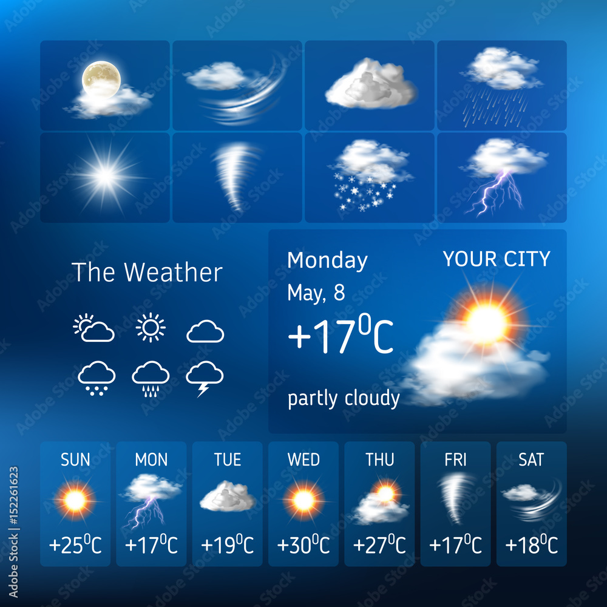

 |
The project, the “WEATHER FORCASTING APP” is a cutting edge and versatile Weather application fundamentally designed to help people to travel long distances connect with their near place ones in a very friendly, easy and hassle-free manner. This application is compatible with all the Android versions. And with said that, anyone owing their own android phone, the Weather Report application can create a huge difference in hooking them up with others provided, they also have the same application loaded on their device or PC. It is very simple to use and easy to install that can be downloaded directly. When it comes to the features, they all are extremely engaging and they keep updating periodically back to back. The extent of fun in using this Weather application is beyond comparison. This application is highly accommodative for quick technological updates and integration. The application will have the features like providing Forecast, Humidity, Pressure etc. |